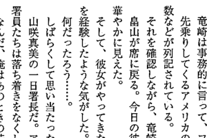
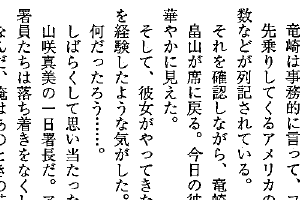
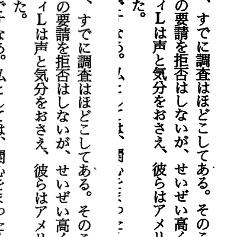
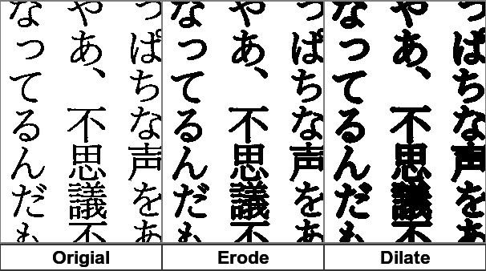
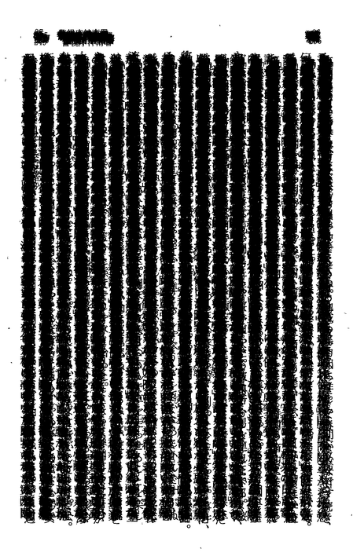
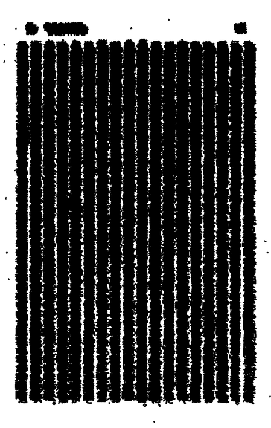
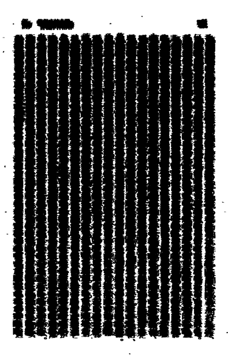

〜2014年9月上旬〜
convertはとにかく画像を全部読み込もうとする。
圧縮されてるものは伸長される。
だから数が多いと途中から他のプロセスにも影響が出るくらい遅くなる。
ということはメモリに読み込ませなければいいわけで、
-limit area 8kとかで制限すればとりあえず回避できる。
mmapになるから遅くなるけど、確実に進む。-debug cacheでその様子がわかる。
ページ数が増えると使い物にならなかった
偶数奇数処理だけど、
昨日の件を考えると-limit area 8kで一応解決する。
しかし遅い。368枚で4分。
% convert *.png -format "convert %f -rotate %[fx:t%2?90:-90] -verbose /tmp/%f" info:
よく見ると画像の内容はどうでもよくてscene numberのtとファイル名のfしか使ってない。
というわけで1画素だけ読み込むことにする。これでメモリの消費量を抑えられるはずだ。
% convert "*.png[1x1+0+0]" -format "convert %f -rotate %[fx:t%2?90:-90] -verbose /tmp/%f" info:
8秒ほどで終了した！
% convert *.png -crop 1x1+0+0 -format "convert %f -rotate %[fx:t%2?90:-90] -verbose /tmp/%f" info:
ではだめ。同じように見える処理だが、こちらは結局全部読み込んでから-cropの処理が走るので後の祭り。
ImageMagickのconvertの話。
実はみんなサイズ指定した場合はresizeだったりするが、これってどう違うのか？
たとえば80%とか指定するとちゃんとみんな80%になる。
マニュアルを見るとextractとresizeは同じと書いてある。
geometryはあまりにもあっさりとした説明でよくわからない。
thumbnailはとにかく速いということだが、resizeと大して速さは変わらない。
一方GraphicsMagickだとthumbnailはめちゃくちゃ速い。resizeの倍ぐらい。
というわけで、GraphicsMagickでスキャン画像を-resizeするなら-thumbnailにしたほうがいい。
ただ文字の太さというか濃さがかなり違うように思うんだけど、フィルタかなにかが違うのか？
% gm benchmark -iterations 100 convert 100.pbm -resize 60% -crop 300x200+100+100 -strip resize-60.png Results: 1 threads 100 iter 10.25s user 10.26s total 9.747 iter/s 9.756 iter/cpu % gm benchmark -iterations 100 convert 100.pbm -thumbnail 60% -crop 300x200+100+100 -strip thumbnail-60.png Results: 1 threads 100 iter 4.13s user 4.88s total 20.492 iter/s 24.213 iter/cpu
 
ImageMagickだとどちらも20秒以上かかっている。結果は同じ。
% convert -bench 100 100.pbm -resize 60% -crop 300x200+100+100 -strip resize-60.png Performance[1]: 100i 4.871ips 1.000e 20.430u 0:20.530 convert -bench 100 100.pbm -thumbnail 60% -crop 300x200+100+100 -strip thumbnail-60.png Performance[1]: 100i 4.666ips 1.000e 21.340u 0:21.430 % cmp resize-60.png thumbnail-60.png %
Morphology of Shapesが面白い。スキャン画像に適用するには文字を太くしたいときに使えそう。
たとえばDilateメソッドで拡大させればいい。
kernelとしては十字1画素がまずは無難。
いろんなkernelの最小がこれになるのでどれでもいいが、
デフォルトが1になってるDiamondがいいかな。
% convert foo.png -negate -morphology Dilate Diamond -negate foo-mor.png
こんな感じでok。-morphologyは白が主なので黒い文字を拡大したければ-negateする必要がある。

なかなかいい感じ。ただ単位が画素なのでdpiが低い画像だとつぶれる。
要素の検証のNetworkはよく使うが、リンクの部分を右クリックするとCopy as cURLなんてものが！
curl 'https://www.google.co.jp/search?q=hoge&hl=ja&ie=UTF-8&btnG=Google+%E6%A4%9C%E7%B4%A2&domains=jarp.does.notwork.org&sitesearch=jarp.does.notwork.org&gws_rd=ssl' \ -H 'accept-encoding: gzip,deflate,sdch' \ -H 'accept-language: ja,en-US;q=0.8,en;q=0.6' \ -H 'user-agent: Mozilla/5.0 (X11; Linux x86_64) AppleWebKit/537.36 (KHTML, like Gecko) Chrome/33.0.1736.3 Safari/537.36' \ -H 'accept: text/html,application/xhtml+xml,application/xml;q=0.9,image/webp,*/*;q=0.8' \ -H 'referer: http://jarp.does.notwork.org/diary/' \ -H 'cookie: SID=<省略>' \ -H 'x-client-data: CJa2yQEIpLbJAQiptskBCMaIygE=' \ --compressed
一番下のGoogle 検索でhogeを検索させたのがこれ。
ボタンを押す前にPreserve logはチェックしておこう。画面が変わってもログが残る。
cookieが長いと大変なことになりそうだが、これは便利だ。
低解像度ではDilateだと穴がやはりつぶれ気味でなんとかならないかなとErodeを試してみた。
Erodeは白を縮小するが逆にいうと黒を拡大するわけで、-negateする必要もない。
でやってみたのが下図だが、なぜかいい感じにDilateよりも抑え気味な変換になっている。

% convert 100.pbm -crop 200x300+400+300 \
\( +clone -morphology erode diamond \) \
\( +clone -negate -morphology dilate diamond -negate \) \
-bordercolor gray -border 1x2 +append \
\( -gravity center -size 200x30 label:{Origial,Erode,Dilate} -border 1x2 +append \) \
-append 100-erode-dilate.png
単純に逆というわけでもないんだな。面白い。
あばれるの困るが逆にきれいにそろってしまうのも困る。

これは100枚ほど重ねたわけだけど、だめだったようで。
そこでerodeで黒を拡大してみる。ちょっと派手目にdiamond:3にしてみた。
これでくっついた。

縦方向にくっつくとまたやっかいなのでrectangle:7x1とかがいいかも。

こんな感じで80行ほどのファイルがある。5行でも同じなので5行で。
A B C D E
これを
A B B C C D D E E A
とするにはどうしたらいいかというのが今日のお題。
ちなみ今これをどうやって作ったかというと、
vimでまず:%s/$/ /で空白を足しといて、
BからEまでCTRL+Vで選択してyして
"A "の空白へカーソルを移動してpして最後にAを追加。
実は意外に簡単にできちゃって唖然としてたりするがまあいいか。
本当はawkでやろうと思ってたんだけど。
やっぱawkでやってみるよ。
% printf "A\nB\nC\nD\nE\n" | awk '{if(l)print l,$0;else f=$0;l=$0}END{print $0,f}'
A B
B C
C D
D E
E A
配列にしようかと思ったが、最初だけ覚えておけばいいのであった。
だったらこれでもいいのか。
% printf "A\nB\nC\nD\nE\n" | sed '1h;1!p;$G' | paste -d' ' - - A B B C C D D E E A
pasteで- -を指定する技はちょくちょく出てくる。
zshにはrepeatがあるので。
% repeat 100 echo $[++i]
あとはzshじゃなくてもbashでもいける。{1..100}を変換する。
xargsはコマンドを指定しないと/bin/echoが呼ばれる。
% echo {1..100} | xargs -n1
awkで変換。
% echo {1..100} | awk '(OFS=RS)&&$1=$1'
trじゃなくてもsedで。
% echo {1..100} | sed 'y/ /\n/'
/etcからじゃなくて乱数で。
% repeat 1000 { echo $[RANDOM%100+1] } | sort -nu | head -100
最後に最近熱いconvertで。
% convert null: -duplicate 99 -scene 1 -format %s info: